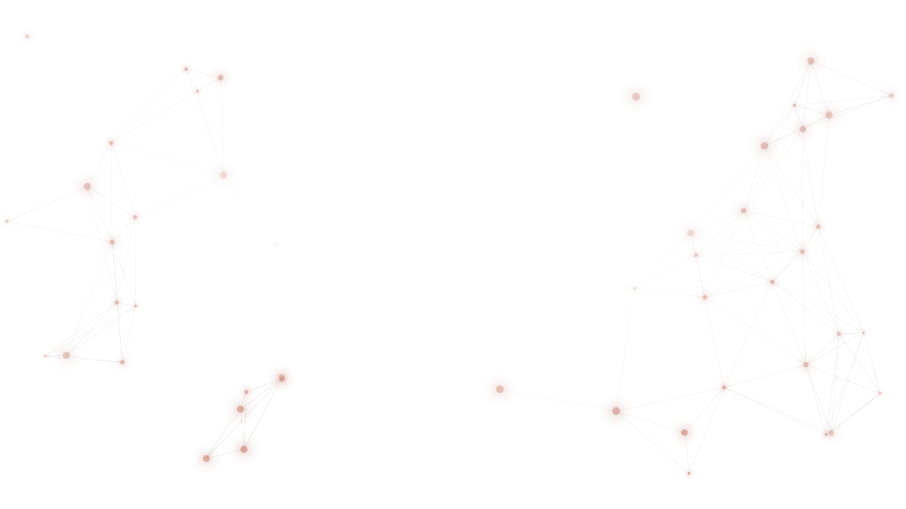

<!doctype html>
<html lang="en">
<head>
<meta charset="utf-8"/>
<meta name="viewport" content="width=device-width,initial-scale=1"/>
<title>Speak to Kit — Lavender Mist</title>
<link rel="preconnect" href="https://fonts.googleapis.com">
<link rel="preconnect" href="https://fonts.gstatic.com" crossorigin>
<link href="https://fonts.googleapis.com/css2?family=Source+Serif+4:ital,opsz,wght@0,8..60,400..700;1,8..60,400..700&family=Geist+Mono:wght@400;500;600&family=Inter:wght@400;500;600;700&display=swap" rel="stylesheet">
<style>
  *,*::before,*::after{box-sizing:border-box}
  html,body{margin:0;padding:0}
  body{font-family:'Inter',ui-sans-serif,system-ui,sans-serif;-webkit-font-smoothing:antialiased;text-rendering:optimizeLegibility;font-optical-sizing:auto;font-feature-settings:"kern" 1}
  button{font:inherit;cursor:pointer;border:0;background:0;color:inherit}
  a{color:inherit;text-decoration:none;cursor:pointer}
  textarea,input{font:inherit}
  ::selection{background:currentColor;color:#fff}
</style>
<script src="https://unpkg.com/react@18.3.1/umd/react.development.js" integrity="sha384-hD6/rw4ppMLGNu3tX5cjIb+uRZ7UkRJ6BPkLpg4hAu/6onKUg4lLsHAs9EBPT82L" crossorigin="anonymous"></script>
<script src="https://unpkg.com/react-dom@18.3.1/umd/react-dom.development.js" integrity="sha384-u6aeetuaXnQ38mYT8rp6sbXaQe3NL9t+IBXmnYxwkUI2Hw4bsp2Wvmx4yRQF1uAm" crossorigin="anonymous"></script>
<script src="https://unpkg.com/@babel/standalone@7.29.0/babel.min.js" integrity="sha384-m08KidiNqLdpJqLq95G/LEi8Qvjl/xUYll3QILypMoQ65QorJ9Lvtp2RXYGBFj1y" crossorigin="anonymous"></script>
<script src="config.js?v=1"></script>
<script src="content.js?v=8"></script>
</head>
<body>
<div id="root"></div>

<template id="__bundler_thumbnail" data-bg-color="#9786AE">
  <svg viewBox="0 0 1200 800" xmlns="http://www.w3.org/2000/svg">
    <g transform="translate(600,400)">
      <g transform="translate(-129,-129) scale(4.4)">
        <path fill="#f3ece1" d="M0 0 C0.70302246 0.00161133 1.40604492 0.00322266 2.13037109 0.00488281 C14.29125048 0.28957634 22.54131281 6.4186563 30.6875 14.88085938 C32.21980719 16.49211145 33.74594919 18.1092509 35.265625 19.73242188 C41.09386122 25.7552653 46.98916399 30.30825617 55.3515625 32.00390625 C66.03649231 31.72272389 71.11174225 27.65535484 78.828125 20.5703125 C85.75174188 14.29438881 90.40793015 12.57304039 99.97265625 12.9609375 C106.80066242 13.82359382 110.81589446 17.29293915 115.02734375 22.59375 C118.94980924 28.30826841 119.03932004 34.81925064 117.890625 41.44921875 C116.05967352 47.7462073 111.70105554 51.93222808 106.25 55.375 C99.5883668 57.83177253 93.8495718 57.83585728 87.25 55.375 C83.54868878 53.33550198 80.77964524 50.95361018 77.875 47.9375 C72.1380232 42.00929064 66.02868156 38.29637743 57.6875 37.9375 C56.23150391 37.84662109 56.23150391 37.84662109 54.74609375 37.75390625 C43.82850812 39.69345498 36.57304259 48.74253124 29.39453125 56.47460938 C22.24320815 63.93917225 14.43275925 69.37894606 3.80493164 69.66772461 C-8.20364465 69.77987665 -16.92216078 66.9231453 -25.75 58.375 C-32.15285988 50.69476159 -34.39668032 41.23586048 -34.09375 31.390625 C-32.96168338 21.45931326 -28.27197697 12.85799873 -20.5078125 6.5546875 C-13.9492795 1.98358874 -8.04830691 -0.01925893 0 0 Z" transform="translate(86.75,94.625)"/>
      </g>
    </g>
  </svg>
</template>

<script type="text/babel" data-presets="react">

/* Tweakable defaults (persisted) */
const TWEAK_DEFAULTS = /*EDITMODE-BEGIN*/{
  "primaryColor": "#9786AE",
  "mode": "light",
  "wordmark": "speak-to-kit",
  "proofVariant": "shortlist"
}/*EDITMODE-END*/;

const C = window.STK_CONTENT;

/* Lead capture submit — POSTs to window.STK_CONFIG.LEAD_WEBHOOK_URL.
   Two-stage flow: hero capsule captures the query, modal captures
   the email, then we send {email, query} together. */
const submitLead = async ({ email = null, query = null, source = 'marketing-site-hero' } = {}) => {
  const url = (window.STK_CONFIG && window.STK_CONFIG.LEAD_WEBHOOK_URL) || '';
  if (!url || url === '__CONFIGURE_BEFORE_DEPLOY__') {
    throw new Error('LEAD_WEBHOOK_URL not configured');
  }
  const res = await fetch(url, {
    method: 'POST',
    headers: { 'Content-Type': 'application/json' },
    body: JSON.stringify({
      email: email ? String(email).trim() : null,
      query: query ? String(query).trim() : null,
      source,
      timestamp: new Date().toISOString(),
    }),
  });
  if (!res.ok) throw new Error('HTTP ' + res.status);
  return res;
};

/* Marque (Contxt) */
const KitMark = ({ size = 28, style = {} }) =>
<svg xmlns="http://www.w3.org/2000/svg" viewBox="0 0 258 259" width={size} height={size} style={{ color: 'currentColor', display: 'block', ...style }} aria-hidden="true">
    <path fill="currentColor" d="M0 0 C0.70302246 0.00161133 1.40604492 0.00322266 2.13037109 0.00488281 C14.29125048 0.28957634 22.54131281 6.4186563 30.6875 14.88085938 C32.21980719 16.49211145 33.74594919 18.1092509 35.265625 19.73242188 C41.09386122 25.7552653 46.98916399 30.30825617 55.3515625 32.00390625 C66.03649231 31.72272389 71.11174225 27.65535484 78.828125 20.5703125 C85.75174188 14.29438881 90.40793015 12.57304039 99.97265625 12.9609375 C106.80066242 13.82359382 110.81589446 17.29293915 115.02734375 22.59375 C118.94980924 28.30826841 119.03932004 34.81925064 117.890625 41.44921875 C116.05967352 47.7462073 111.70105554 51.93222808 106.25 55.375 C99.5883668 57.83177253 93.8495718 57.83585728 87.25 55.375 C83.54868878 53.33550198 80.77964524 50.95361018 77.875 47.9375 C72.1380232 42.00929064 66.02868156 38.29637743 57.6875 37.9375 C56.23150391 37.84662109 56.23150391 37.84662109 54.74609375 37.75390625 C43.82850812 39.69345498 36.57304259 48.74253124 29.39453125 56.47460938 C22.24320815 63.93917225 14.43275925 69.37894606 3.80493164 69.66772461 C-8.20364465 69.77987665 -16.92216078 66.9231453 -25.75 58.375 C-32.15285988 50.69476159 -34.39668032 41.23586048 -34.09375 31.390625 C-32.96168338 21.45931326 -28.27197697 12.85799873 -20.5078125 6.5546875 C-13.9492795 1.98358874 -8.04830691 -0.01925893 0 0 Z" transform="translate(86.75,94.625)" />
  </svg>;


/* Wordmark variants */
const Wordmark = ({ variant = 'speak-to-kit', size = 18, primary }) => {
  const common = { display: 'inline-flex', alignItems: 'center', gap: '0.5em', lineHeight: 1 };
  const markColor = primary || 'currentColor';
  const markEl = <span style={{ color: markColor, display: 'inline-flex' }}><KitMark size={size * 1.15} /></span>;
  if (variant === 'stk') return <span style={{ ...common, fontWeight: 700, letterSpacing: '0.14em', fontSize: size * 0.85 }}>{markEl}<span>STK</span></span>;
  if (variant === 'Kit') return <span style={{ ...common, fontWeight: 700, fontSize: size, letterSpacing: '-0.02em' }}>{markEl}<span style={{ color: markColor }}>Kit</span></span>;
  if (variant === 'kit') return <span style={{ ...common, fontWeight: 700, fontSize: size, letterSpacing: '-0.02em' }}>{markEl}<span style={{ color: markColor }}>kit</span></span>;
  return <span style={{ ...common, fontWeight: 600, fontSize: size * 0.9, letterSpacing: '-0.01em' }}>{markEl}<span>speak to <span style={{ color: markColor }}>Kit</span></span></span>;
};

/* Lead-capture modal — two variants share the same shell, swap copy:
   - signin:        opened from hero submit. Captures email, sends
                    {email, query, source:'marketing-site-hero'} so n8n
                    has both the brief and the contact in one payload.
   - early-access:  opened from nav/CTA buttons. Captures email only,
                    sends {email, query:null, source:'marketing-site-cta'}.
   On success, modal swaps to a "Thanks — someone will be in touch". */
const LoginModal = ({ open, onClose, primary, query, variant = 'signin' }) => {
  const [email, setEmail] = React.useState('');
  const [stage, setStage] = React.useState('idle'); // idle | sending | sent | error
  const inputRef = React.useRef(null);

  React.useEffect(() => {
    if (!open) return;
    setStage('idle');
    setEmail('');
    const t = setTimeout(() => inputRef.current?.focus(), 80);
    const onKey = (e) => { if (e.key === 'Escape') onClose(); };
    window.addEventListener('keydown', onKey);
    return () => { clearTimeout(t); window.removeEventListener('keydown', onKey); };
  }, [open, onClose]);

  if (!open) return null;

  const ink = '#1a1814';
  const cream = '#f3ece1';
  const muted = '#6b665b';
  const rule = 'rgba(26,24,20,0.12)';
  const valid = /\S+@\S+\.\S+/.test(email.trim());

  const copy = variant === 'early-access' ? {
    eyebrow: 'Early access',
    heading: 'Get early access.',
    sub: 'Drop your work email and we’ll let you know the moment Kit is ready for you.',
    button: 'Request early access',
    sentHeading: 'Thanks — you’re on the list.',
    sentSub: 'We’ll be in touch the moment Kit is open for new sign-ups.',
    source: 'marketing-site-cta',
  } : {
    eyebrow: 'Early access',
    heading: 'Sign in to start the search.',
    sub: 'Drop your work email and Kit will be in touch with your hiring plan.',
    button: <>Sign in &amp; start the search</>,
    sentHeading: 'Thanks — someone will be in touch.',
    sentSub: 'Kit is reviewing your brief. Expect to hear from us within one working day.',
    source: 'marketing-site-hero',
  };

  const submit = async () => {
    if (!valid || stage === 'sending') return;
    setStage('sending');
    try {
      await submitLead({ email: email.trim(), query: variant === 'signin' ? (query || null) : null, source: copy.source });
      setStage('sent');
    } catch (e) {
      setStage('error');
    }
  };

  return (
    <div role="dialog" aria-modal="true" onClick={onClose} style={{
      position: 'fixed', inset: 0, zIndex: 100,
      background: 'rgba(20,18,15,0.55)', backdropFilter: 'blur(6px)',
      display: 'flex', alignItems: 'center', justifyContent: 'center',
      padding: 24,
      animation: 'stk-modal-fade 220ms ease-out'
    }}>
      <div onClick={(e) => e.stopPropagation()} style={{
        background: '#fff', color: ink, width: '100%', maxWidth: 460,
        borderRadius: 24, padding: '40px 36px 32px',
        boxShadow: '0 40px 110px -20px rgba(0,0,0,0.45)',
        position: 'relative',
        animation: 'stk-modal-pop 260ms cubic-bezier(.2,.9,.3,1.2)'
      }}>
        <button onClick={onClose} aria-label="Close" style={{
          position: 'absolute', top: 14, right: 14, width: 32, height: 32, borderRadius: 999,
          background: 'transparent', color: muted, display: 'grid', placeItems: 'center',
          fontSize: 18, lineHeight: 1
        }}>×</button>

        {stage === 'sent' ? (
          <div style={{ textAlign: 'center' }}>
            <div style={{ display: 'inline-flex', alignItems: 'center', gap: 8, color: primary, fontSize: 11, fontWeight: 600, letterSpacing: '0.16em', textTransform: 'uppercase', marginBottom: 18 }}>
              <span style={{ width: 6, height: 6, borderRadius: 999, background: primary }} />
              Sent
            </div>
            <h2 style={{ margin: '0 0 12px', fontFamily: "'Source Serif 4', serif", fontWeight: 500, fontOpticalSizing: 'auto', fontSize: 28, letterSpacing: '-0.015em', lineHeight: 1.2, color: ink }}>
              {copy.sentHeading}
            </h2>
            <p style={{ margin: 0, fontSize: 14, color: muted, lineHeight: 1.55 }}>
              {copy.sentSub}
            </p>
            <button onClick={onClose} style={{
              marginTop: 28, background: ink, color: cream, padding: '12px 22px', borderRadius: 999,
              fontSize: 14, fontWeight: 600, letterSpacing: '-0.005em'
            }}>Close</button>
          </div>
        ) : (
          <>
            <div style={{ display: 'inline-flex', alignItems: 'center', gap: 8, color: primary, fontSize: 11, fontWeight: 600, letterSpacing: '0.16em', textTransform: 'uppercase', marginBottom: 14 }}>
              <span style={{ width: 6, height: 6, borderRadius: 999, background: primary }} />
              {copy.eyebrow}
            </div>
            <h2 style={{ margin: '0 0 10px', fontFamily: "'Source Serif 4', serif", fontWeight: 500, fontOpticalSizing: 'auto', fontSize: 30, letterSpacing: '-0.018em', lineHeight: 1.15, color: ink }}>
              {copy.heading}
            </h2>
            <p style={{ margin: '0 0 24px', fontSize: 14, color: muted, lineHeight: 1.55 }}>
              {copy.sub}
            </p>
            <label style={{ display: 'block', fontSize: 11, fontWeight: 600, letterSpacing: '0.12em', textTransform: 'uppercase', color: muted, marginBottom: 8 }}>Work email</label>
            <input
              ref={inputRef}
              type="email"
              value={email}
              onChange={(e) => setEmail(e.target.value)}
              onKeyDown={(e) => { if (e.key === 'Enter') { e.preventDefault(); submit(); } }}
              disabled={stage === 'sending'}
              placeholder="you@company.com"
              style={{
                width: '100%', padding: '14px 16px', fontSize: 16,
                border: `1px solid ${rule}`, borderRadius: 12, outline: 'none',
                fontFamily: 'inherit', color: ink, background: '#fff',
                transition: 'border-color 160ms ease, box-shadow 160ms ease',
                opacity: stage === 'sending' ? 0.6 : 1
              }}
              onFocus={(e) => { e.currentTarget.style.borderColor = primary; e.currentTarget.style.boxShadow = `0 0 0 3px ${primary}22`; }}
              onBlur={(e) => { e.currentTarget.style.borderColor = rule; e.currentTarget.style.boxShadow = 'none'; }}
            />
            <button onClick={submit} disabled={!valid || stage === 'sending'} style={{
              marginTop: 16, width: '100%', padding: '14px 18px', borderRadius: 12,
              background: valid ? primary : 'rgba(26,24,20,0.08)',
              color: valid ? '#fff' : muted,
              fontSize: 15, fontWeight: 600, letterSpacing: '-0.005em',
              cursor: valid && stage !== 'sending' ? 'pointer' : 'not-allowed',
              boxShadow: valid ? `0 12px 28px -10px ${primary}88` : 'none',
              transition: 'background 200ms ease, box-shadow 200ms ease',
              display: 'inline-flex', alignItems: 'center', justifyContent: 'center', gap: 8
            }}>
              {stage === 'sending' ? (
                <>
                  <svg width="16" height="16" viewBox="0 0 24 24" fill="none" stroke="currentColor" strokeWidth="2.4" strokeLinecap="round" style={{ animation: 'stk-spin 0.9s linear infinite' }}><path d="M21 12a9 9 0 11-6.22-8.56" /></svg>
                  Sending&hellip;
                </>
              ) : copy.button}
            </button>
            {stage === 'error' && (
              <div style={{ marginTop: 14, fontSize: 13, color: muted, textAlign: 'center' }}>
                Something went wrong &mdash; try again or email <a href="mailto:hello@speaktokit.com" style={{ color: 'inherit', textDecoration: 'underline' }}>hello@speaktokit.com</a>.
              </div>
            )}
            <p style={{ margin: '20px 0 0', fontSize: 12, color: muted, lineHeight: 1.5, textAlign: 'center' }}>
              By continuing you agree to our <a href="privacy-policy.html" style={{ color: 'inherit', textDecoration: 'underline' }}>privacy policy</a>.
            </p>
          </>
        )}
      </div>
      <style>{`
        @keyframes stk-modal-fade { from { opacity: 0 } to { opacity: 1 } }
        @keyframes stk-modal-pop { from { opacity: 0; transform: translateY(8px) scale(0.98) } to { opacity: 1; transform: none } }
      `}</style>
    </div>
  );
};

/* Spine node — one row in the narrative spine, aligned to left or right of centre vertical line */
const SpineNode = ({ n, side = 'left', primary, fg, mutedColor, bg, compact = false, children }) => {
  const isLeft = side === 'left';
  return (
    <div style={{ position: 'relative', display: 'grid', gridTemplateColumns: '1fr 1fr', columnGap: 0, paddingBottom: compact ? 16 : 36, minHeight: compact ? 44 : 'auto' }}>
      {/* Left cell */}
      <div style={{ gridColumn: 1, paddingRight: 52, textAlign: 'right', display: isLeft ? 'block' : 'none' }}>
        {isLeft && children}
      </div>
      {/* Spine marker — numbered node bang on the centre line */}
      <div style={{
        position: 'absolute', left: '50%', top: 0, transform: 'translateX(-50%)',
        width: compact ? 32 : 38, height: compact ? 32 : 38, borderRadius: 999,
        background: bg, border: `1px solid ${primary}`,
        display: 'grid', placeItems: 'center',
        fontFamily: "'Source Serif 4', serif", fontSize: compact ? 12 : 13, color: primary, fontWeight: 500,
        zIndex: 2
      }}>{n}</div>
      {/* Tick line from spine to content on the active side */}
      <div aria-hidden="true" style={{
        position: 'absolute', top: compact ? 16 : 19,
        left: isLeft ? `calc(50% - ${compact ? 16 : 19}px)` : `calc(50% + ${compact ? 16 : 19}px)`,
        width: 26,
        transform: isLeft ? 'translateX(-100%)' : 'translateX(0)',
        height: 1, background: `${primary}66`
      }} />
      {/* Right cell */}
      <div style={{ gridColumn: 2, paddingLeft: 52, textAlign: 'left', display: !isLeft ? 'block' : 'none' }}>
        {!isLeft && children}
      </div>
    </div>);

};

/* ==========================================================
   VOICE-FORWARD COMPONENTS
   ========================================================== */

/* Live-looking waveform — smooth rAF animation, eased amplitudes */
const Waveform = ({ active = false, bars = 40, color, height = 56, thin = false }) => {
  const ref = React.useRef(null);
  const stateRef = React.useRef({ targets: [], current: [], phases: [], t: 0 });
  React.useEffect(() => {
    const s = stateRef.current;
    s.targets = Array.from({ length: bars }, () => 0.4);
    s.current = Array.from({ length: bars }, () => 0.4);
    s.phases = Array.from({ length: bars }, (_, i) => i * 0.47 + Math.random() * 6);
    let raf;
    let last = performance.now();
    let nextRetarget = 0;
    const tick = (now) => {
      const dt = Math.min(0.05, (now - last) / 1000);
      last = now;
      s.t += dt;
      // Slowly retarget amplitudes so bars ease between values
      if (now > nextRetarget) {
        for (let i = 0; i < bars; i++) {
          const base = active ?
          0.35 + Math.random() * 0.6 :
          0.25 + Math.random() * 0.22;
          s.targets[i] = base;
        }
        nextRetarget = now + (active ? 140 : 420);
      }
      // Ease current toward target
      const ease = active ? 8 : 3.5;
      const el = ref.current;
      if (el) {
        const kids = el.children;
        for (let i = 0; i < bars; i++) {
          s.current[i] += (s.targets[i] - s.current[i]) * Math.min(1, dt * ease);
          // Add a tiny breathing modulation so it feels alive even between retargets
          const mod = active ?
          Math.sin(s.t * 7 + s.phases[i]) * 0.08 :
          Math.sin(s.t * 1.4 + s.phases[i]) * 0.04;
          const a = Math.max(0.08, Math.min(1, s.current[i] + mod));
          const bar = kids[i];
          if (bar) bar.style.height = (a * height).toFixed(1) + 'px';
        }
      }
      raf = requestAnimationFrame(tick);
    };
    raf = requestAnimationFrame(tick);
    return () => cancelAnimationFrame(raf);
  }, [active, bars, height]);
  return (
    <div ref={ref} style={{ display: 'flex', alignItems: 'center', gap: thin ? 2 : 3, height, width: '100%', justifyContent: 'center' }}>
      {Array.from({ length: bars }).map((_, i) =>
      <span key={i} style={{
        display: 'block',
        width: thin ? 2 : 3,
        height: `${height * 0.3}px`,
        background: color,
        borderRadius: 2,
        opacity: active ? 0.9 : 0.55
      }} />
      )}
    </div>);

};

/* Ambient background waveform — editorial, intentional, layered */
const AmbientWave = ({ color, position = 'bottom' }) => {
  const ref = React.useRef(null);
  React.useEffect(() => {
    let raf;
    const tick = () => {
      const t = performance.now() / 1000;
      const W = 1600,H = 200;
      const make = (amp, freq, phase, sub) => {
        const pts = [];
        for (let x = 0; x <= W; x += 6) {
          const y = H / 2 +
          Math.sin(x * freq + t * 0.6 + phase) * amp +
          Math.sin(x * freq * 2.3 - t * 0.4 + phase) * amp * 0.35 +
          Math.sin(x * freq * 4.1 + t * 0.25) * sub;
          pts.push(`${x},${y.toFixed(1)}`);
        }
        return pts.join(' ');
      };
      const el = ref.current;
      if (el) {
        const polys = el.querySelectorAll('polyline');
        if (polys[0]) polys[0].setAttribute('points', make(36, 0.004, 0, 4));
        if (polys[1]) polys[1].setAttribute('points', make(24, 0.0065, 1.6, 3));
        if (polys[2]) polys[2].setAttribute('points', make(14, 0.011, 3.1, 2));
      }
      raf = requestAnimationFrame(tick);
    };
    raf = requestAnimationFrame(tick);
    return () => cancelAnimationFrame(raf);
  }, []);
  const pos = position === 'top' ?
  { top: 0, height: 220, transform: 'scaleY(-1)' } :
  { bottom: 0, height: 220 };
  return (
    <svg ref={ref} viewBox="0 0 1600 200" preserveAspectRatio="none" style={{ position: 'absolute', left: 0, right: 0, width: '100%', pointerEvents: 'none', ...pos }} aria-hidden="true">
      <defs>
        <linearGradient id="stk-wavefade" x1="0" x2="1" y1="0" y2="0">
          <stop offset="0%" stopColor={color} stopOpacity="0" />
          <stop offset="18%" stopColor={color} stopOpacity="1" />
          <stop offset="82%" stopColor={color} stopOpacity="1" />
          <stop offset="100%" stopColor={color} stopOpacity="0" />
        </linearGradient>
        <mask id="stk-wavemask"><rect width="1600" height="200" fill="url(#stk-wavefade)" /></mask>
      </defs>
      <g mask="url(#stk-wavemask)">
        <polyline fill="none" stroke={color} strokeWidth="1" strokeLinecap="round" opacity="0.12" />
        <polyline fill="none" stroke={color} strokeWidth="1.25" strokeLinecap="round" opacity="0.22" />
        <polyline fill="none" stroke={color} strokeWidth="1.5" strokeLinecap="round" opacity="0.42" />
      </g>
    </svg>);

};

/* Voice capsule — mic on left, waveform fills width; click waveform → morph to text inline */
const VoiceCapsule = ({ primary, dark, surface, rule, fg, muted, onLoginOpen, jd, setJd, size = 'lg', helper = null }) => {
  const [mode, setMode] = React.useState('voice'); // 'voice' | 'recording' | 'text'
  const [elapsed, setElapsed] = React.useState(0);
  const textareaRef = React.useRef(null);
  React.useEffect(() => {
    if (mode !== 'recording') return;
    setElapsed(0);
    const id = setInterval(() => setElapsed((v) => v + 1), 1000);
    return () => clearInterval(id);
  }, [mode]);
  React.useEffect(() => {if (mode === 'text') textareaRef.current?.focus();}, [mode]);

  const submit = () => {if (jd.trim().length < 3) {textareaRef.current?.focus();return;}onLoginOpen();};
  const toggleMic = (e) => {
    e.stopPropagation();
    if (mode === 'recording') {setMode('voice');onLoginOpen();return;}
    setMode('recording');
  };
  const waveformToText = () => {
    if (mode === 'recording') return; // don't morph while recording
    setMode('text');
  };
  const fmt = (s) => `${String(Math.floor(s / 60)).padStart(2, '0')}:${String(s % 60).padStart(2, '0')}`;

  const big = size === 'lg';
  const capsuleH = big ? 118 : 96;
  const btnSize = big ? 92 : 74;

  return (
    <div style={{ maxWidth: 680, margin: '0 auto', textAlign: 'center' }}>
      {helper &&
      <div style={{ fontSize: 13, color: muted, marginBottom: 14, letterSpacing: '-0.005em' }}>{helper}</div>
      }
      <div style={{
        background: surface,
        border: `1px solid ${rule}`,
        borderRadius: 999,
        boxShadow: dark ? '0 20px 60px -20px rgba(0,0,0,0.6)' : '0 14px 44px -20px rgba(26,24,20,0.18)',
        padding: mode === 'text' ? '14px 18px 14px 14px' : '12px 28px 12px 12px',
        display: 'flex', alignItems: 'center', gap: mode === 'text' ? 14 : 20,
        height: capsuleH,
        transition: 'padding 260ms ease, border-radius 260ms ease',
        borderRadius: mode === 'text' ? 36 : 999
      }}>
        {/* Mic button — always visible on the left */}
        <button onClick={toggleMic} aria-label={mode === 'recording' ? 'Stop recording' : 'Tap to speak'} style={{
          width: btnSize, height: btnSize, borderRadius: 999,
          background: primary,
          color: '#fff', display: 'grid', placeItems: 'center',
          boxShadow: mode === 'recording' ? `0 0 0 0 ${primary}` : `0 10px 30px -8px ${primary}66`,
          animation: mode === 'recording' ? 'stk-pulse 1.6s ease-out infinite' : 'none',
          flexShrink: 0,
          padding: 0
        }}>
          {mode === 'recording' ?
          <span style={{ width: 18, height: 18, background: '#fff', borderRadius: 4, display: 'block' }} /> :

          <svg width={big ? 34 : 28} height={big ? 34 : 28} viewBox="0 0 24 24" fill="none" stroke="currentColor" strokeWidth="2.2" strokeLinecap="round" strokeLinejoin="round" style={{ display: 'block' }}><rect x="9" y="2" width="6" height="12" rx="3" /><path d="M5 10v1a7 7 0 0014 0v-1" /><path d="M12 18v4" /><path d="M8 22h8" /></svg>
          }
        </button>

        {/* Right side — either waveform (voice/recording) or text input (text). Morphs in place. */}
        <div style={{ flex: 1, minWidth: 0, height: '100%', position: 'relative' }}>
          {/* Waveform layer */}
          <button onClick={waveformToText} aria-label="Type instead" style={{
            position: 'absolute', inset: 0, display: 'flex', flexDirection: 'column', justifyContent: 'center', gap: 6, padding: '4px 0',
            opacity: mode === 'text' ? 0 : 1,
            transform: mode === 'text' ? 'translateX(-10px)' : 'translateX(0)',
            transition: 'opacity 220ms ease, transform 260ms ease',
            pointerEvents: mode === 'text' ? 'none' : 'auto',
            cursor: mode === 'recording' ? 'default' : 'text',
            width: '100%'
          }}>
            {mode === 'recording' &&
            <div style={{ display: 'flex', justifyContent: 'space-between', alignItems: 'baseline', fontSize: 13, lineHeight: 1 }}>
                <span style={{ color: primary, fontWeight: 600, letterSpacing: '-0.01em' }}>Listening…</span>
                <span style={{ fontFamily: "'Geist Mono', monospace", fontSize: 12, color: primary }}>{fmt(elapsed)}</span>
              </div>
            }
            <Waveform active={mode === 'recording'} color={mode === 'recording' ? primary : muted} height={big ? 44 : 36} bars={big ? 40 : 32} thin />
          </button>

          {/* Text input layer */}
          <div style={{
            position: 'absolute', inset: 0, display: 'flex', alignItems: 'center', gap: 10,
            opacity: mode === 'text' ? 1 : 0,
            transform: mode === 'text' ? 'translateX(0)' : 'translateX(10px)',
            transition: 'opacity 260ms ease 60ms, transform 260ms ease 60ms',
            pointerEvents: mode === 'text' ? 'auto' : 'none'
          }}>
            <textarea ref={textareaRef} value={jd} onChange={(e) => setJd(e.target.value)}
            onKeyDown={(e) => {if (e.key === 'Enter' && !e.shiftKey) {e.preventDefault();submit();}if (e.key === 'Escape') {setMode('voice');}}}
            placeholder="find me a senior engineer, we’re rebuilding our platform…"
            style={{ flex: 1, height: big ? 74 : 60, padding: '4px 2px', fontSize: 16, lineHeight: 1.4, background: 'transparent', border: 0, color: fg, resize: 'none', outline: 'none', fontFamily: 'inherit' }} />
            <button onClick={submit} style={{ background: primary, color: '#fff', padding: '10px 18px', borderRadius: 999, fontSize: 14, fontWeight: 600, flexShrink: 0 }}>Start →</button>
          </div>
        </div>
      </div>
      <style>{`@keyframes stk-pulse{0%{box-shadow:0 0 0 0 ${primary}66}70%{box-shadow:0 0 0 22px ${primary}00}100%{box-shadow:0 0 0 0 ${primary}00}}`}</style>
    </div>);

};

/* Typing-placeholder voice capsule — for the final CTA. Same shell, animated typing placeholder. */
const TYPING_LINES = [
"Find me a senior engineer, we\u2019re rebuilding our platform\u2026",
"Find me a GTM lead for a Series A fintech\u2026",
"Find me a product designer who\u2019s shipped consumer apps\u2026",
"Find me a staff SRE with on-call experience\u2026",
"Find me a head of sales for enterprise AI\u2026",
"Find me a technical PM with a developer-tools background\u2026"];


/* Hero journey capsule — input → brief → attach JD → opens sign-in modal */
const HeroJourneyCapsule = ({ primary, dark, surface, rule, fg, muted, jd, setJd, large = false, onLoginOpen }) => {
  const [step, setStep] = React.useState(jd.trim().length >= 3 ? 'ready' : 'idle');
  const [lineIdx, setLineIdx] = React.useState(0);
  const [typed, setTyped] = React.useState('');
  const [attached, setAttached] = React.useState(null);
  const inputRef = React.useRef(null);
  const fileRef = React.useRef(null);

  React.useEffect(() => {
    if (step !== 'idle') return;
    const target = TYPING_LINES[lineIdx];
    const msPerChar = 44;const holdMs = 1600;
    let cancelled = false;let t;
    const tick = (phase, i) => {
      if (cancelled) return;
      if (phase === 'type') {
        if (i <= target.length) {setTyped(target.slice(0, i));t = setTimeout(() => tick('type', i + 1), msPerChar);} else
        {t = setTimeout(() => tick('delete', target.length), holdMs);}
      } else {
        if (i >= 0) {setTyped(target.slice(0, i));t = setTimeout(() => tick('delete', i - 1), msPerChar * 0.55);} else
        {setLineIdx((v) => (v + 1) % TYPING_LINES.length);}
      }
    };
    tick('type', 0);
    return () => {cancelled = true;clearTimeout(t);};
  }, [step, lineIdx]);

  const activate = () => {if (step === 'idle') {setStep('typing');setTimeout(() => inputRef.current?.focus(), 20);}};
  const onInputChange = (e) => {
    const v = e.target.value;
    setJd(v);
    if (v.trim().length >= 3) setStep('ready');else
    if (step === 'ready') setStep('typing');
  };
  const onKeyDown = (e) => {
    if (e.key === 'Enter') {e.preventDefault();submit();}
  };
  const pickFile = () => fileRef.current?.click();
  const onFile = (e) => {const f = e.target.files?.[0];if (f) setAttached({ name: f.name, size: f.size });};
  const clearAttach = (e) => {e.stopPropagation();setAttached(null);if (fileRef.current) fileRef.current.value = '';};
  const submit = () => {
    const value = jd.trim();
    if (value.length < 3) { inputRef.current?.focus(); return; }
    if (typeof onLoginOpen === 'function') onLoginOpen();
  };

  const inputFont = "'Inter', ui-sans-serif, system-ui, sans-serif";
  const canContinue = jd.trim().length >= 3;

  // Hero variant of capsule supports `large` for the above-the-fold composer
  const padTop = large ? '30px 30px 22px' : '18px 18px 14px';
  const minH = large ? 144 : 28;
  const fontSz = large ? 22 : 16;
  const cursorH = large ? 26 : 18;
  const radius = large ? 28 : 20;

  return (
    <div style={{ maxWidth: large ? 820 : 680, margin: '0 auto', textAlign: 'left' }}>
      <div onClick={activate} style={{
        background: surface,
        border: `1px solid ${dark ? 'rgba(243,236,225,0.18)' : 'rgba(26,24,20,0.16)'}`,
        borderRadius: radius,
        boxShadow: dark
          ? '0 40px 110px -28px rgba(0,0,0,0.85), 0 8px 24px -8px rgba(0,0,0,0.35)'
          : '0 32px 84px -16px rgba(26,24,20,0.45), 0 6px 18px -6px rgba(26,24,20,0.18)',
        padding: padTop,
        cursor: step === 'idle' ? 'text' : 'default'
      }}>
        <div style={{ display: 'flex', alignItems: large ? 'flex-start' : 'center', gap: 10, minHeight: minH }}>
          {step === 'idle' &&
          <div style={{ display: 'flex', alignItems: large ? 'flex-start' : 'center', gap: 8, flex: 1, minWidth: 0, overflow: 'hidden', paddingTop: large ? 2 : 0 }}>
              <span style={{ fontFamily: inputFont, fontSize: fontSz, color: muted, letterSpacing: '-0.005em', whiteSpace: 'nowrap', overflow: 'hidden', textOverflow: 'ellipsis', lineHeight: 1.4 }}>{typed}</span>
              <span aria-hidden="true" style={{ display: 'inline-block', width: 2, height: cursorH, background: primary, borderRadius: 1, animation: 'stk-cursor 0.9s step-end infinite', flexShrink: 0, marginTop: large ? 4 : 0 }} />
            </div>
          }
          {step !== 'idle' && !large &&
          <input ref={inputRef} type="text" value={jd} onChange={onInputChange} onKeyDown={onKeyDown}
          placeholder="Describe your ideal hire…"
          style={{ flex: 1, minWidth: 0, fontFamily: inputFont, fontSize: 16, color: fg, background: 'transparent', border: 0, outline: 'none', padding: 0, letterSpacing: '-0.005em' }} />
          }
          {step !== 'idle' && large &&
          <textarea ref={inputRef} value={jd} onChange={onInputChange} onKeyDown={(e) => { if (e.key === 'Enter' && (e.metaKey || e.ctrlKey)) { e.preventDefault(); submit(); } }}
          placeholder="Describe your ideal hire…"
          rows={4}
          style={{ flex: 1, minWidth: 0, fontFamily: inputFont, fontSize: 22, color: fg, background: 'transparent', border: 0, outline: 'none', padding: 0, letterSpacing: '-0.005em', resize: 'none', lineHeight: 1.45 }} />
          }
        </div>
        <div style={{ display: 'flex', alignItems: 'center', gap: 10, marginTop: 14, paddingTop: 14, borderTop: `1px solid ${rule}` }}>
          <button type="button" onClick={(e) => {e.stopPropagation();pickFile();}} disabled={step === 'idle'} style={{
            display: 'inline-flex', alignItems: 'center', gap: 8, padding: '8px 12px', borderRadius: 999,
            border: `1px dashed ${rule}`, background: 'transparent',
            color: step === 'idle' ? muted : fg, fontSize: 13, fontWeight: 500,
            opacity: step === 'idle' ? 0.55 : 1, cursor: step === 'idle' ? 'not-allowed' : 'pointer'
          }}>
            <svg width="14" height="14" viewBox="0 0 24 24" fill="none" stroke="currentColor" strokeWidth="2" strokeLinecap="round" strokeLinejoin="round"><path d="M21.44 11.05l-9.19 9.19a6 6 0 01-8.49-8.49l9.19-9.19a4 4 0 015.66 5.66l-9.2 9.19a2 2 0 01-2.83-2.83l8.49-8.48" /></svg>
            {attached ?
            <span style={{ display: 'inline-flex', alignItems: 'center', gap: 6 }}>
                <span style={{ maxWidth: 160, overflow: 'hidden', textOverflow: 'ellipsis', whiteSpace: 'nowrap' }}>{attached.name}</span>
                <span onClick={clearAttach} aria-label="Remove" style={{ display: 'inline-flex', alignItems: 'center', justifyContent: 'center', width: 16, height: 16, borderRadius: 999, background: `${primary}22`, color: primary, fontSize: 11, cursor: 'pointer' }}>×</span>
              </span> :

            <span>Attach a JD <span style={{ color: muted, fontWeight: 400 }}>(optional)</span></span>
            }
          </button>
          <input ref={fileRef} type="file" accept=".pdf,.doc,.docx,.txt,.md" onChange={onFile} style={{ display: 'none' }} />
          <div style={{ flex: 1 }} />
          <button type="button" onClick={(e) => {e.stopPropagation();submit();}} disabled={!canContinue} aria-label="Submit" style={{
            display: 'inline-flex', alignItems: 'center', justifyContent: 'center', width: 44, height: 44, padding: 0, borderRadius: 999,
            background: canContinue ? primary : dark ? 'rgba(243,236,225,0.08)' : 'rgba(26,24,20,0.06)',
            color: canContinue ? '#fff' : muted,
            boxShadow: canContinue ? `0 10px 28px -10px ${primary}88` : 'none',
            cursor: canContinue ? 'pointer' : 'not-allowed',
            transition: 'background 200ms ease, box-shadow 200ms ease',
            flexShrink: 0
          }}>
            <svg width="20" height="20" viewBox="0 0 24 24" fill="none" stroke="currentColor" strokeWidth="2.4" strokeLinecap="round" strokeLinejoin="round" aria-hidden="true"><path d="M5 12h14"/><path d="M13 6l6 6-6 6"/></svg>
          </button>
        </div>
      </div>
      <style>{`
        @keyframes stk-cursor{0%,50%{opacity:1}50.01%,100%{opacity:0}}
        @keyframes stk-spin{to{transform:rotate(360deg)}}
        @media (max-width: 720px) {
          .stk-live-transcript--home { height: 920px !important; }
        }
      `}</style>
    </div>);

};

const TypingVoiceCapsule = ({ primary, dark, surface, rule, fg, muted, onLoginOpen, jd, setJd, speedFactor = 7, helper = null }) => {
  const [mode, setMode] = React.useState('voice');
  const [elapsed, setElapsed] = React.useState(0);
  const [typed, setTyped] = React.useState('');
  const [lineIdx, setLineIdx] = React.useState(0);
  const textareaRef = React.useRef(null);

  // Typing animation — only when in 'voice' mode (i.e. not yet interacted)
  React.useEffect(() => {
    if (mode !== 'voice') return;
    const target = TYPING_LINES[lineIdx];
    // speedFactor 1..10 maps to ms-per-char 90..20, with hold & delete derived from that
    const msPerChar = Math.max(18, 100 - speedFactor * 8);
    const holdMs = 1500;
    let cancelled = false;
    let t;
    const tick = (phase, i) => {
      if (cancelled) return;
      if (phase === 'type') {
        if (i <= target.length) {
          setTyped(target.slice(0, i));
          t = setTimeout(() => tick('type', i + 1), msPerChar);
        } else {
          t = setTimeout(() => tick('delete', target.length), holdMs);
        }
      } else {
        if (i >= 0) {
          setTyped(target.slice(0, i));
          t = setTimeout(() => tick('delete', i - 1), Math.max(10, msPerChar * 0.5));
        } else {
          setLineIdx((v) => (v + 1) % TYPING_LINES.length);
        }
      }
    };
    tick('type', 0);
    return () => {cancelled = true;clearTimeout(t);};
  }, [mode, lineIdx, speedFactor]);

  React.useEffect(() => {
    if (mode !== 'recording') return;
    setElapsed(0);
    const id = setInterval(() => setElapsed((v) => v + 1), 1000);
    return () => clearInterval(id);
  }, [mode]);
  React.useEffect(() => {if (mode === 'text') textareaRef.current?.focus();}, [mode]);

  const submit = () => {if (jd.trim().length < 3) {textareaRef.current?.focus();return;}onLoginOpen();};
  const toggleMic = (e) => {
    e.stopPropagation();
    if (mode === 'recording') {setMode('voice');onLoginOpen();return;}
    setMode('recording');
  };
  const toText = () => {
    if (mode === 'recording') return;
    setMode('text');
  };
  const fmt = (s) => `${String(Math.floor(s / 60)).padStart(2, '0')}:${String(s % 60).padStart(2, '0')}`;
  const capsuleH = 118;
  const btnSize = 92;

  return (
    <div style={{ maxWidth: 680, margin: '0 auto', textAlign: 'center' }}>
      {helper &&
      <div style={{ fontSize: 13, color: muted, marginBottom: 14 }}>{helper}</div>
      }
      <div style={{
        background: surface,
        border: `1px solid ${rule}`,
        borderRadius: mode === 'text' ? 36 : 999,
        boxShadow: dark ? '0 20px 60px -20px rgba(0,0,0,0.6)' : '0 14px 44px -20px rgba(26,24,20,0.18)',
        padding: mode === 'text' ? '14px 18px 14px 14px' : '12px 28px 12px 12px',
        display: 'flex', alignItems: 'center', gap: mode === 'text' ? 14 : 20,
        height: capsuleH,
        transition: 'padding 260ms ease, border-radius 260ms ease'
      }}>
        <button onClick={toggleMic} aria-label={mode === 'recording' ? 'Stop recording' : 'Tap to speak'} style={{
          width: btnSize, height: btnSize, borderRadius: 999, background: primary, color: '#fff',
          display: 'grid', placeItems: 'center',
          boxShadow: mode === 'recording' ? `0 0 0 0 ${primary}` : `0 10px 30px -8px ${primary}66`,
          animation: mode === 'recording' ? 'stk-pulse 1.6s ease-out infinite' : 'none',
          flexShrink: 0, padding: 0
        }}>
          {mode === 'recording' ?
          <span style={{ width: 18, height: 18, background: '#fff', borderRadius: 4, display: 'block' }} /> :

          <svg width={34} height={34} viewBox="0 0 24 24" fill="none" stroke="currentColor" strokeWidth="2.2" strokeLinecap="round" strokeLinejoin="round" style={{ display: 'block' }}><rect x="9" y="2" width="6" height="12" rx="3" /><path d="M5 10v1a7 7 0 0014 0v-1" /><path d="M12 18v4" /><path d="M8 22h8" /></svg>
          }
        </button>

        <div style={{ flex: 1, minWidth: 0, height: '100%', position: 'relative' }}>
          {/* Typing placeholder (voice/recording mode) — click to enter real text mode */}
          <button onClick={toText} style={{
            position: 'absolute', inset: 0, display: 'flex', alignItems: 'center', justifyContent: 'flex-start', textAlign: 'left',
            opacity: mode === 'text' ? 0 : 1,
            transform: mode === 'text' ? 'translateX(-10px)' : 'translateX(0)',
            transition: 'opacity 220ms ease, transform 260ms ease',
            pointerEvents: mode === 'text' ? 'none' : 'auto',
            cursor: mode === 'recording' ? 'default' : 'text',
            width: '100%',
            padding: 0
          }}>
            <div style={{ flex: 1, minWidth: 0, display: 'flex', alignItems: 'center', gap: 8, overflow: 'hidden' }}>
              <span style={{
                fontFamily: "'Inter', ui-sans-serif, system-ui, sans-serif",
                fontWeight: 400,
                fontSize: 16,
                color: mode === 'recording' ? primary : mode === 'voice' ? muted : fg,
                letterSpacing: '-0.005em', lineHeight: 1.3,
                whiteSpace: 'nowrap', overflow: 'hidden', textOverflow: 'ellipsis'
              }}>
                {mode === 'recording' ? 'Listening…' : typed}
              </span>
              {mode !== 'recording' &&
              <span aria-hidden="true" style={{
                display: 'inline-block', width: 2, height: 18, background: primary, borderRadius: 1,
                animation: 'stk-cursor 0.9s step-end infinite', flexShrink: 0
              }} />
              }
              {mode === 'recording' &&
              <span style={{ fontFamily: "'Geist Mono', monospace", fontSize: 13, color: primary, marginLeft: 'auto', flexShrink: 0 }}>{fmt(elapsed)}</span>
              }
            </div>
          </button>

          {/* Real text input (text mode) */}
          <div style={{
            position: 'absolute', inset: 0, display: 'flex', alignItems: 'center', gap: 10,
            opacity: mode === 'text' ? 1 : 0,
            transform: mode === 'text' ? 'translateX(0)' : 'translateX(10px)',
            transition: 'opacity 260ms ease 60ms, transform 260ms ease 60ms',
            pointerEvents: mode === 'text' ? 'auto' : 'none'
          }}>
            <textarea ref={textareaRef} value={jd} onChange={(e) => setJd(e.target.value)}
            onKeyDown={(e) => {if (e.key === 'Enter' && !e.shiftKey) {e.preventDefault();submit();}if (e.key === 'Escape') {setMode('voice');}}}
            placeholder="find me a senior engineer, we’re rebuilding our platform…"
            style={{ flex: 1, height: 74, padding: '4px 2px', fontSize: 16, lineHeight: 1.4, background: 'transparent', border: 0, color: fg, resize: 'none', outline: 'none', fontFamily: 'inherit' }} />
            <button onClick={submit} style={{ background: primary, color: '#fff', padding: '10px 18px', borderRadius: 999, fontSize: 14, fontWeight: 600, flexShrink: 0 }}>Start →</button>
          </div>
        </div>
      </div>
      <style>{`
        @keyframes stk-pulse{0%{box-shadow:0 0 0 0 ${primary}66}70%{box-shadow:0 0 0 22px ${primary}00}100%{box-shadow:0 0 0 0 ${primary}00}}
        @keyframes stk-cursor{0%,50%{opacity:1}50.01%,100%{opacity:0}}
      `}</style>
    </div>);

};

/* Call-in-progress panel — voice screening made visible */
const CallInProgress = ({ primary, dark, surface, rule, fg, muted }) => {
  const [elapsed, setElapsed] = React.useState(134);
  const [shown, setShown] = React.useState(1);
  React.useEffect(() => {
    const id = setInterval(() => setElapsed((v) => v + 1), 1000);
    return () => clearInterval(id);
  }, []);
  React.useEffect(() => {
    if (shown >= transcript.length) return;
    const id = setTimeout(() => setShown((v) => v + 1), 2200);
    return () => clearTimeout(id);
  }, [shown]);
  const transcript = [
  { who: 'Kit', text: 'Your CV says you\u2019ve been at Stripe-adjacent payments for three years. What\u2019s making you look right now?' },
  { who: 'Priya N.', text: 'The team\u2019s grown a lot and I\u2019m doing more code review than building. I want to be back hands-on, ideally earlier-stage.' },
  { who: 'Kit', text: 'That tracks. The senior IC track here is genuinely IC. What does \u201chands-on\u201d look like for you in a good week \u2014 shipping features, system design, infra?' },
  { who: 'Priya N.', text: 'System design, mostly. I like the bit before the code.' },
  { who: 'Kit', text: 'Got it. A piece of work coming up: rebuilding their ledger from SQL-on-Postgres to event-sourced. Done that in production?' },
  { who: 'Priya N.', text: 'Once, at a previous role. Went well \u2014 not at huge scale.' }];

  const fmt = (s) => `${String(Math.floor(s / 60)).padStart(2, '0')}:${String(s % 60).padStart(2, '0')}`;
  return (
    <div style={{ background: surface, border: `1px solid ${rule}`, borderRadius: 16, padding: 20, boxShadow: dark ? '0 20px 60px -20px rgba(0,0,0,0.6)' : '0 14px 44px -20px rgba(26,24,20,0.12)' }}>
      <div style={{ display: 'flex', justifyContent: 'space-between', alignItems: 'center', marginBottom: 14, paddingBottom: 14, borderBottom: `1px solid ${rule}` }}>
        <div style={{ display: 'flex', alignItems: 'center', gap: 10 }}>
          <span style={{ width: 8, height: 8, borderRadius: 999, background: '#e25a4a', boxShadow: '0 0 0 4px rgba(226,90,74,0.18)', animation: 'stk-blink 1.6s ease-in-out infinite' }} />
          <span style={{ fontSize: 12, color: muted, letterSpacing: '0.1em', fontWeight: 600 }}>SCREENING CALL</span>
        </div>
        <span style={{ fontFamily: "'Geist Mono', monospace", fontSize: 12, color: muted }}>{fmt(elapsed)}</span>
      </div>
      <div style={{ display: 'flex', alignItems: 'center', gap: 14, marginBottom: 16 }}>
        <div style={{ width: 52, height: 52, borderRadius: 999, background: `linear-gradient(135deg, ${primary} 0%, ${primary}aa 100%)`, display: 'grid', placeItems: 'center', color: '#fff', fontFamily: "'Source Serif 4', serif", fontSize: 22, fontWeight: 500, letterSpacing: '-0.02em', flexShrink: 0 }}>PN</div>
        <div style={{ flex: 1, minWidth: 0 }}>
          <div style={{ fontSize: 15, fontWeight: 700, color: fg, letterSpacing: '-0.01em' }}>Priya N.</div>
          <div style={{ fontSize: 12, color: muted, marginTop: 2 }}>Senior Engineer · Applicant #47</div>
        </div>
      </div>
      <div style={{ background: dark ? 'rgba(243,236,225,0.04)' : 'rgba(26,24,20,0.03)', borderRadius: 10, padding: '14px 16px', marginBottom: 14 }}>
        <Waveform active={true} color={primary} height={38} bars={52} thin />
      </div>
      <div style={{ display: 'flex', flexDirection: 'column', gap: 10, minHeight: 120 }}>
        {transcript.slice(0, shown).map((l, i) =>
        <div key={i} style={{ animation: 'stk-fade-in 600ms ease-out both' }}>
            <div style={{ fontSize: 11, color: l.who === 'Kit' ? primary : muted, fontWeight: 600, letterSpacing: '0.04em', marginBottom: 2 }}>{l.who.toUpperCase()}</div>
            <div style={{ fontSize: 14, color: fg, lineHeight: 1.5 }}>{l.text}</div>
          </div>
        )}
        {shown < transcript.length &&
        <div style={{ display: 'flex', gap: 4, marginTop: 4 }}>
            {[0, 1, 2].map((i) => <span key={i} style={{ width: 6, height: 6, borderRadius: 999, background: muted, animation: `stk-typing 1.2s ease-in-out ${i * 0.15}s infinite` }} />)}
          </div>
        }
      </div>
      <style>{`
        @keyframes stk-blink{0%,100%{opacity:1}50%{opacity:0.4}}
        @keyframes stk-fade-in{0%{opacity:0;transform:translateY(4px)}100%{opacity:1;transform:translateY(0)}}
        @keyframes stk-typing{0%,60%,100%{opacity:0.3;transform:translateY(0)}30%{opacity:1;transform:translateY(-3px)}}
      `}</style>
    </div>);

};

/* Live conversation — animated chat unfold mirrored from for-jobseekers,
   fixed transcript height so the page doesn't reflow as messages arrive. */
const LiveConversation = ({ primary }) => {
  const script = (C.conversation && C.conversation.chat && C.conversation.chat.bubbles) || [];
  const [shown, setShown] = React.useState(1);
  const [typing, setTyping] = React.useState(false);
  const [elapsed, setElapsed] = React.useState(132);
  React.useEffect(() => {
    const id = setInterval(() => setElapsed((v) => v + 1), 1000);
    return () => clearInterval(id);
  }, []);
  React.useEffect(() => {
    if (!script.length) return;
    if (shown >= script.length) {
      const r = setTimeout(() => setShown(1), 7000);
      return () => clearTimeout(r);
    }
    setTyping(true);
    const t1 = setTimeout(() => setTyping(false), 1200);
    const t2 = setTimeout(() => setShown((v) => v + 1), 2600);
    return () => { clearTimeout(t1); clearTimeout(t2); };
  }, [shown]);
  const fmt = (s) => `${String(Math.floor(s / 60)).padStart(2, '0')}:${String(s % 60).padStart(2, '0')}`;
  const speakerLabel = (from) => from === 'kit' ? 'KIT' : 'PRIYA N.';
  const surface = '#ffffff';
  const cardRule = 'rgba(26,24,20,0.10)';
  const ink = '#1a1814';
  const mutedInk = '#6b665b';
  return (
    <div style={{ background: surface, borderRadius: 18, boxShadow: '0 30px 80px -24px rgba(0,0,0,0.55)', overflow: 'hidden' }}>
      <div style={{ display: 'flex', alignItems: 'center', gap: 12, padding: '18px 22px', borderBottom: `1px solid ${cardRule}` }}>
        <span style={{ width: 8, height: 8, borderRadius: 999, background: '#2ea853', boxShadow: '0 0 0 4px rgba(46,168,83,0.22)', animation: 'stk-livepulse 1.4s ease-in-out infinite' }} />
        <span style={{ fontSize: 11, color: mutedInk, letterSpacing: '0.2em', fontWeight: 600 }}>LIVE · VOICE CONVERSATION</span>
        <span style={{ marginLeft: 'auto', fontFamily: "'Geist Mono', monospace", fontSize: 11, color: mutedInk }}>{fmt(elapsed)}</span>
      </div>
      <div style={{ padding: '14px 22px 10px', background: `linear-gradient(to bottom, ${primary}10, transparent)` }}>
        <Waveform active={true} color={primary} bars={56} height={36} thin />
      </div>
      <div className="stk-live-transcript stk-live-transcript--home" style={{ padding: '8px 22px 22px', display: 'flex', flexDirection: 'column', gap: 14, height: 680, overflow: 'hidden' }}>
        {script.slice(0, shown).map((l, i) =>
          <div key={i} style={{ animation: 'stk-fade-in 500ms ease-out both', alignSelf: l.from === 'user' ? 'flex-end' : 'flex-start', maxWidth: '88%' }}>
            <div style={{ fontSize: 10.5, color: l.from === 'kit' ? primary : mutedInk, fontWeight: 600, letterSpacing: '0.16em', marginBottom: 4, textAlign: l.from === 'user' ? 'right' : 'left' }}>{speakerLabel(l.from)}</div>
            <div style={{
              padding: '12px 16px', borderRadius: 14,
              borderTopLeftRadius: l.from === 'kit' ? 4 : 14,
              borderTopRightRadius: l.from === 'user' ? 4 : 14,
              fontSize: 14.5, lineHeight: 1.5,
              background: l.from === 'kit' ? '#f3ece1' : `${primary}15`,
              color: l.from === 'kit' ? ink : primary,
              fontFamily: "'Inter', sans-serif",
              fontWeight: 500,
            }}>{l.text}</div>
          </div>
        )}
        {typing && shown < script.length &&
          <div style={{ alignSelf: script[shown].from === 'user' ? 'flex-end' : 'flex-start', padding: '10px 14px', background: script[shown].from === 'kit' ? '#f3ece1' : `${primary}15`, borderRadius: 14, display: 'flex', gap: 4 }}>
            {[0, 1, 2].map((i) => <span key={i} style={{ width: 6, height: 6, borderRadius: 999, background: script[shown].from === 'kit' ? mutedInk : primary, animation: `stk-typing 1.1s ease-in-out ${i * 0.14}s infinite` }} />)}
          </div>
        }
      </div>
    </div>);

};

/* Anatomy of a shortlist — three candidate cards emerging from waveform */
/* Live shortlist — ticking counter, elapsed timer, transcript snippets */
const Shortlist = ({ primary, dark, surface, rule, fg, muted }) => {
  const cands = [
  { initials: 'PN', name: 'Priya N.', fit: 94, quote: 'I\u2019ve done event-sourcing in production. Not at huge scale.' },
  { initials: 'DR', name: 'Daniel R.', fit: 91, quote: 'I\u2019ve owned ledger migrations at this scale twice before.' },
  { initials: 'AM', name: 'Amara M.', fit: 88, quote: 'The last team I joined went from monthly to weekly releases.' }];

  // Ticking screened count — starts at 96, climbs slowly
  const [screened, setScreened] = React.useState(96);
  React.useEffect(() => {
    const id = setInterval(() => setScreened((v) => v + 1), 14000);
    return () => clearInterval(id);
  }, []);
  // Rotating pair of active interviewees — changes with each tick of the count
  const interviewPairs = [
  ['Omar K.', 'Janet H.'],
  ['Priya R.', 'Marcus W.'],
  ['Léa D.', 'Tomás G.'],
  ['Ines A.', 'Reuben O.'],
  ['Sana M.', 'Harold J.']];

  const [pairIdx, setPairIdx] = React.useState(0);
  React.useEffect(() => {
    const id = setInterval(() => setPairIdx((v) => (v + 1) % interviewPairs.length), 14000);
    return () => clearInterval(id);
  }, [interviewPairs.length]);
  // Elapsed time on active call — ticks every second
  const [elapsed, setElapsed] = React.useState(240); // 4:00
  React.useEffect(() => {
    const id = setInterval(() => setElapsed((v) => v + 1), 1000);
    return () => clearInterval(id);
  }, []);
  // Transcript snippets — flash past one at a time
  const snippets = [
  'At my last company I led the migration\u2026',
  'We went from monthly to weekly releases\u2026',
  'I\u2019d break it into three tracks\u2026',
  'The hardest call I made that year\u2026',
  'I owned the whole incident response\u2026',
  'Six months, not twelve, and here\u2019s why\u2026'];

  const [snipIdx, setSnipIdx] = React.useState(0);
  React.useEffect(() => {
    const id = setInterval(() => setSnipIdx((v) => (v + 1) % snippets.length), 3400);
    return () => clearInterval(id);
  }, [snippets.length]);

  return (
    <div style={{ background: surface, border: `1px solid ${rule}`, borderRadius: 16, padding: '20px 22px 18px', boxShadow: dark ? '0 20px 60px -20px rgba(0,0,0,0.6)' : '0 14px 44px -20px rgba(26,24,20,0.12)' }}>
      {/* Header row — minimal kicker + LIVE chip */}
      <div style={{ display: 'flex', justifyContent: 'space-between', alignItems: 'baseline', marginBottom: 10 }}>
        <div style={{ fontSize: 11, color: primary, letterSpacing: '0.2em', fontWeight: 600 }}>
          SHORTLIST
        </div>
        <div style={{ display: 'flex', alignItems: 'center', gap: 6, fontSize: 11, color: muted, fontFamily: "'Geist Mono', monospace", letterSpacing: '0.04em' }}>
          <span style={{ width: 6, height: 6, borderRadius: 999, background: '#2ea853', boxShadow: '0 0 0 3px rgba(46,168,83,0.18)', animation: 'stk-livepulse 1.4s ease-in-out infinite' }} />
          LIVE
        </div>
      </div>
      {/* Active waveform band */}
      <div style={{ height: 44, marginBottom: 10 }}>
        <Waveform active={true} color={primary} height={44} bars={60} thin />
      </div>
      {/* Active-state line — rotating interview pair, slow tick */}
      <div style={{ display: 'flex', alignItems: 'center', gap: 10, padding: '10px 2px 14px', borderTop: `1px solid ${rule}`, borderBottom: `1px solid ${rule}`, marginBottom: 14 }}>
        <span style={{ width: 8, height: 8, borderRadius: 999, background: primary, boxShadow: `0 0 0 4px ${primary}22`, animation: 'stk-livepulse 1.4s ease-in-out infinite', flexShrink: 0 }} />
        <div style={{ flex: 1, minWidth: 0, display: 'flex', alignItems: 'baseline', gap: 10, flexWrap: 'nowrap' }}>
          <span key={'nm-' + pairIdx} style={{ fontSize: 13, color: fg, fontWeight: 600, letterSpacing: '-0.01em', whiteSpace: 'nowrap', animation: 'stk-snippet 14s ease-in-out both' }}>
            Interviewing {interviewPairs[pairIdx][0]} <span style={{ color: muted, fontWeight: 400 }}>&</span> {interviewPairs[pairIdx][1]}
          </span>
          <span key={snipIdx} style={{ fontSize: 12.5, color: muted, fontStyle: 'italic', fontFamily: "'Source Serif 4', serif", overflow: 'hidden', textOverflow: 'ellipsis', whiteSpace: 'nowrap', flex: 1, minWidth: 0, animation: 'stk-snippet 3.4s ease-in-out both' }}>
            “{snippets[snipIdx]}”
          </span>
        </div>
      </div>
      {/* The three candidate cards */}
      <div style={{ display: 'flex', flexDirection: 'column', gap: 10 }}>
        {cands.map((c, i) => {
          const pct = Math.max(0, Math.min(100, c.fit));
          return (
            <div key={i} style={{ position: 'relative', display: 'flex', gap: 14, alignItems: 'center', padding: '14px 14px 16px', background: dark ? 'rgba(243,236,225,0.03)' : 'rgba(26,24,20,0.025)', border: `1px solid ${rule}`, borderRadius: 12, overflow: 'hidden', animation: `stk-rise 700ms ease-out ${i * 0.12}s both` }}>
              <div style={{ width: 44, height: 44, borderRadius: 999, background: `linear-gradient(135deg, ${primary} 0%, ${primary}99 100%)`, display: 'grid', placeItems: 'center', color: '#fff', fontFamily: "'Source Serif 4', serif", fontSize: 18, fontWeight: 500, flexShrink: 0 }}>{c.initials}</div>
              <div style={{ flex: 1, minWidth: 0 }}>
                <div style={{ fontSize: 15, fontWeight: 700, color: fg, letterSpacing: '-0.01em', marginBottom: 3 }}>{c.name}</div>
                <div style={{ fontSize: 13, color: muted, fontStyle: 'italic', fontFamily: "'Source Serif 4', serif", lineHeight: 1.4, display: '-webkit-box', WebkitLineClamp: 1, WebkitBoxOrient: 'vertical', overflow: 'hidden' }}>“{c.quote}”</div>
              </div>
              {/* Inline fit badge — numeric, no ring */}
              <div style={{ display: 'flex', flexDirection: 'column', alignItems: 'flex-end', gap: 2, flexShrink: 0, paddingRight: 4 }}>
                <div style={{ display: 'flex', alignItems: 'baseline', gap: 2 }}>
                  <span style={{ fontFamily: "'Source Serif 4', serif", fontSize: 22, fontWeight: 400, color: fg, letterSpacing: '-0.02em', lineHeight: 1 }}>{pct}</span>
                  <span style={{ fontSize: 11, color: muted, fontWeight: 500 }}>%</span>
                </div>
                <div style={{ fontSize: 9, color: muted, letterSpacing: '0.16em', fontWeight: 600, textTransform: 'uppercase' }}>fit</div>
              </div>
              <svg width="16" height="16" viewBox="0 0 24 24" fill="none" stroke={primary} strokeWidth="2" strokeLinecap="round" style={{ flexShrink: 0 }}><polygon points="6 4 20 12 6 20 6 4" fill={primary} /></svg>
              {/* Subtle progress bar at the bottom edge of the card */}
              <div aria-hidden="true" style={{ position: 'absolute', left: 0, right: 0, bottom: 0, height: 2, background: dark ? 'rgba(243,236,225,0.06)' : 'rgba(26,24,20,0.06)' }} />
              <div aria-hidden="true" style={{ position: 'absolute', left: 0, bottom: 0, height: 2, width: `${pct}%`, background: primary, opacity: 0.9, transition: 'width 600ms ease' }} />
            </div>);

        })}
      </div>
      {/* Summary line under the cards, centred */}
      <div style={{ textAlign: 'center', marginTop: 16, fontSize: 13, color: fg, fontWeight: 600, letterSpacing: '-0.01em' }}>
        <span style={{ fontFamily: "'Source Serif 4', serif", fontStyle: 'italic', fontWeight: 400, fontSize: 17, color: primary, marginRight: 6 }}>3</span>
        top candidates identified <span style={{ color: muted, fontWeight: 400 }}>from {screened}+ screened</span>
      </div>
      <style>{`
        @keyframes stk-rise{0%{opacity:0;transform:translateY(10px)}100%{opacity:1;transform:translateY(0)}}
        @keyframes stk-livepulse{0%,100%{opacity:1}50%{opacity:0.45}}
        @keyframes stk-snippet{0%{opacity:0;transform:translateX(6px)}18%{opacity:0.9;transform:translateX(0)}82%{opacity:0.9}100%{opacity:0;transform:translateX(-6px)}}
      `}</style>
    </div>);

};

/* Single-quote testimonial carousel — one card at a time, editorial scale */
const TestimonialCarousel = ({ primary, dark, surface, rule, fg, muted, items, speedSec = 6 }) => {
  const [idx, setIdx] = React.useState(0);
  const [paused, setPaused] = React.useState(false);
  React.useEffect(() => {
    if (paused) return;
    const id = setInterval(() => setIdx((v) => (v + 1) % items.length), speedSec * 1000);
    return () => clearInterval(id);
  }, [paused, items.length, speedSec]);
  const t = items[idx];
  return (
    <div onMouseEnter={() => setPaused(true)} onMouseLeave={() => setPaused(false)} style={{ position: 'relative', width: '100%' }}>
      <figure key={idx} style={{ margin: 0, display: 'grid', gridTemplateColumns: 'auto 1fr', gap: 28, alignItems: 'start', width: '100%', animation: 'stk-fade-in 480ms ease-out both' }}>
        <div style={{ fontFamily: "'Source Serif 4', serif", fontSize: 120, color: primary, lineHeight: 0.7, letterSpacing: '-0.04em' }}>“</div>
        <div>
          <blockquote style={{ margin: 0, fontFamily: "'Source Serif 4', serif", fontStyle: 'italic', fontWeight: 400, fontSize: 'clamp(32px, 3.8vw, 52px)', lineHeight: 1.15, letterSpacing: '-0.02em', color: fg, textWrap: 'pretty' }}>
            {t.quote}
          </blockquote>
          <figcaption style={{ marginTop: 24, fontSize: 14, color: fg, fontWeight: 600 }}>
            {t.name}
          </figcaption>
        </div>
      </figure>
      <div style={{ display: 'flex', justifyContent: 'center', alignItems: 'center', marginTop: 48, width: '100%' }}>
        <div style={{ display: 'flex', alignItems: 'center', gap: 14 }}>
          <div style={{ display: 'flex', gap: 6 }}>
            {items.map((_, i) =>
            <button key={i} onClick={() => setIdx(i)} aria-label={`Go to ${i + 1}`} style={{ width: i === idx ? 22 : 7, height: 7, borderRadius: 999, background: i === idx ? primary : muted, opacity: i === idx ? 1 : 0.35, transition: 'all 220ms', padding: 0 }} />
            )}
          </div>
          <button onClick={() => setIdx((v) => (v - 1 + items.length) % items.length)} aria-label="Previous" style={{ width: 38, height: 38, borderRadius: 999, border: `1px solid ${rule}`, color: fg, display: 'grid', placeItems: 'center', marginLeft: 8 }}>
            <svg width="15" height="15" viewBox="0 0 24 24" fill="none" stroke="currentColor" strokeWidth="2" strokeLinecap="round"><polyline points="15 18 9 12 15 6" /></svg>
          </button>
          <button onClick={() => setIdx((v) => (v + 1) % items.length)} aria-label="Next" style={{ width: 38, height: 38, borderRadius: 999, border: `1px solid ${rule}`, color: fg, display: 'grid', placeItems: 'center' }}>
            <svg width="15" height="15" viewBox="0 0 24 24" fill="none" stroke="currentColor" strokeWidth="2" strokeLinecap="round"><polyline points="9 18 15 12 9 6" /></svg>
          </button>
        </div>
      </div>
    </div>);

};

/* ==========================================================
   DIRECTION 1 — EDITORIAL (closest to the Lovable warm cream)
   ========================================================== */
const EditorialSite = ({ primary, mode, wordmark, onLoginOpen, onEarlyAccessOpen, jd, setJd, proofVariant = 'call' }) => {
  const dark = mode === 'dark';
  // Softer dark mode — warm graphite, not near-black
  const bg = dark ? '#2b2a28' : '#f3ece1';
  const bgSoft = dark ? '#34332f' : '#efe6d7';
  const dark2 = dark ? '#1f1e1c' : '#1f1c18';
  const fg = dark ? '#f3ece1' : '#1a1814';
  const onDark = '#f3ece1';
  const muted = dark ? '#a8a59d' : '#6b665b';
  const rule = dark ? 'rgba(243,236,225,0.14)' : 'rgba(26,24,20,0.12)';
  const surface = dark ? '#34332f' : '#ffffff';
  const textareaRef = React.useRef(null);
  const submit = () => {if (jd.trim().length < 3) {textareaRef.current?.focus();return;}onLoginOpen();};

  return (
    <div style={{ background: bg, color: fg, minHeight: '100vh', fontFamily: "'Inter', sans-serif" }} data-screen-label="01 Editorial">
      {/* Nav */}
      <header style={{ display: 'flex', justifyContent: 'space-between', alignItems: 'center', padding: '18px 32px', borderBottom: `1px solid ${rule}`, background: bgSoft }}>
        <div style={{ display: 'flex', alignItems: 'center', gap: 28 }}>
          <Wordmark variant={wordmark} size={18} primary={primary} />
          <nav style={{ display: 'flex', gap: 22, fontSize: 13, color: muted }}>
            {C.nav.map((n) => <a key={n.label} href={n.href} style={{ cursor:'pointer' }}>{n.label}</a>)}
          </nav>
        </div>
        {/* Header — Log in (secondary) + Get early access (primary), to match sub-pages */}
        <div style={{ display: 'flex', gap: 20, alignItems: 'center', fontSize: 13 }}>
          <a href="https://app.contxt.network/" style={{ color: muted, fontWeight: 500, letterSpacing: '-0.005em', textDecoration: 'none' }} onMouseEnter={(e) => e.currentTarget.style.color = fg} onMouseLeave={(e) => e.currentTarget.style.color = muted}>Log in</a>
          <button type="button" onClick={onEarlyAccessOpen} style={{
            display: 'inline-flex', alignItems: 'center', justifyContent: 'center',
            fontWeight: 600, fontSize: 13,
            padding: '8px 16px', borderRadius: 999,
            background: primary, color: '#fff',
            boxShadow: `0 6px 20px -8px ${primary}66`,
            transition: 'background 160ms ease',
            cursor: 'pointer'
          }}>Get early access</button>
        </div>
      </header>

      {/* Hero — above-the-fold, capsule dominant (Lovable proportions) */}
      <section id="hero" style={{ position: 'relative', background: `radial-gradient(ellipse 1100px 620px at 50% 38%, ${dark ? `${primary}26` : `${primary}1f`}, transparent 62%)`, padding: 'clamp(56px, 7vh, 88px) 24px clamp(64px, 8vh, 96px)', textAlign: 'center', overflow: 'hidden', minHeight: 'calc(100vh - 73px)', display: 'flex', flexDirection: 'column', justifyContent: 'center' }}>
        
        <AmbientWave color={primary} />
        <div style={{ position: 'relative', zIndex: 1, width: '100%' }}>
          <h1 style={{ fontFamily: "'Source Serif 4', serif", fontWeight: 500, fontOpticalSizing: 'auto', fontSize: 'clamp(44px, 5.5vw, 72px)', letterSpacing: '-0.02em', lineHeight: 1.05, margin: '0 0 18px', color: primary }}>{C.hero.headline}</h1>
          <p style={{ fontSize: 'clamp(15px, 1.15vw, 18px)', color: muted, fontWeight: 400, maxWidth: 600, margin: '0 auto 36px', lineHeight: 1.5 }}>
            <strong style={{ color: primary, fontWeight: 500 }}>Kit</strong> finds them, screens them, and delivers a shortlist.
          </p>
          <HeroJourneyCapsule large primary={primary} dark={dark} surface={surface} rule={rule} fg={fg} muted={muted} jd={jd} setJd={setJd} onLoginOpen={onLoginOpen} />
          <div style={{ marginTop: 18, fontSize: 12.5, color: muted, letterSpacing: '-0.005em' }}>{C.hero.footnote}</div>
          <div style={{ marginTop: 8, fontSize: 12.5, display: 'flex', gap: 18, justifyContent: 'center' }}>
            {C.hero.secondaryLinks.map((l) => <a key={l.label} style={{ color: muted, textDecoration: 'underline', textDecorationColor: `${muted}55`, textUnderlineOffset: 3 }}>{l.label}</a>)}
          </div>
        </div>
      </section>

      {/* Stats strip — dramatic numerals */}
      <section className="stk-stats-section" style={{ background: dark ? '#3a3935' : '#ffffff', borderTop: `1px solid ${rule}`, borderBottom: `1px solid ${rule}` }}>
        <div className="stk-stats-grid" style={{ maxWidth: 1200, margin: '0 auto', display: 'grid', gridTemplateColumns: `repeat(${C.stats.length},1fr)` }}>
          {C.stats.map((s, i) =>
          <div key={i} className="stk-stat-cell" style={{ padding: '64px 32px', textAlign: 'center', borderLeft: i === 0 ? 'none' : `1px solid ${rule}` }}>
              <div style={{ fontFamily: "'Source Serif 4', serif", fontSize: 'clamp(52px, 6.2vw, 80px)', color: fg, letterSpacing: '-0.035em', lineHeight: 1, fontWeight: 400, fontOpticalSizing: 'auto', fontVariantNumeric: 'tabular-nums', fontFeatureSettings: '"tnum"' }}>{s.big}</div>
              <div style={{ fontSize: 13, color: muted, marginTop: 16, letterSpacing: '0.08em', textTransform: 'uppercase', fontWeight: 500, lineHeight: 1.4 }}>{s.small}</div>
            </div>
          )}
        </div>
        <style>{`
          @media (max-width: 720px) {
            .stk-stats-grid { grid-template-columns: 1fr !important; }
            .stk-stat-cell { border-left: 0 !important; border-top: 1px solid ${rule}; padding: 40px 24px !important; }
            .stk-stat-cell:first-child { border-top: 0; }
          }
        `}</style>
      </section>

      {/* Problem */}
      <section style={{ padding: '80px 32px' }}>
        <div style={{ maxWidth: 1200, margin: '0 auto', display: 'grid', gridTemplateColumns: '1fr 2fr', gap: 60 }}>
          <div>
            <div style={{ fontSize: 11, color: primary, letterSpacing: '0.22em', marginBottom: 14, fontWeight: 600 }}>{C.problem.kicker}</div>
            <h2 style={{ fontFamily: "'Source Serif 4', serif", fontWeight: 500, fontOpticalSizing: 'auto', fontSize: 40, letterSpacing: '-0.018em', lineHeight: 1.1, margin: 0 }}>{C.problem.title}</h2>
          </div>
          <div style={{ display: 'grid', gridTemplateColumns: 'repeat(3,1fr)', gap: 32 }}>
            {C.problem.columns.map((c, i) =>
            <div key={i} style={{ paddingTop: 20, position: 'relative' }}>
                <span style={{ position: 'absolute', left: 0, top: 0, width: 24, height: 2, background: primary, display: 'block' }} />
                <h3 style={{ margin: '0 0 10px', fontSize: 16, fontWeight: 700, letterSpacing: '-0.01em' }}>{c.title}</h3>
                <p style={{ margin: 0, fontSize: 14, lineHeight: 1.55, color: muted }}>{c.body}</p>
              </div>
            )}
          </div>
        </div>
      </section>

      {/* === THE SPINE — 01→09, continuous narrative, shortlist as payoff === */}
      <section style={{ background: dark2, color: onDark, padding: '110px 32px 90px', position: 'relative', overflow: 'hidden' }}>
        <div style={{ maxWidth: 1200, margin: '0 auto', position: 'relative' }}>

          {/* Section intro */}
          <div style={{ textAlign: 'center', marginBottom: 72, maxWidth: 760, margin: '0 auto 72px' }}>
            <div style={{ fontSize: 11, color: primary, letterSpacing: '0.22em', marginBottom: 18, fontWeight: 600 }}>{C.how.kicker}</div>
            <h2 style={{ fontFamily: "'Source Serif 4', serif", fontWeight: 500, fontOpticalSizing: 'auto', fontSize: 'clamp(40px, 4.8vw, 60px)', letterSpacing: '-0.02em', lineHeight: 1.06, margin: 0 }}>
              {C.how.titleLine1} <em style={{ fontStyle: 'italic', fontWeight: 400, color: primary }}>{C.how.titleLine2}</em>
            </h2>
          </div>

          {/* Spine container */}
          <div style={{ position: 'relative', maxWidth: 1040, margin: '0 auto' }}>
            {/* The vertical spine line — full height, fades at top and bottom */}
            <div aria-hidden="true" style={{
              position: 'absolute', left: '50%', top: 0, bottom: 0, width: 1,
              background: `linear-gradient(to bottom, ${primary}00 0%, ${primary}88 6%, ${primary}88 94%, ${primary}00 100%)`,
              transform: 'translateX(-0.5px)'
            }} />

            {/* ============= PART 1 — HOW KIT WORKS (left of spine) ============= */}
            <div style={{ position: 'relative', paddingBottom: 30 }}>
              {/* Part label — sits on the LEFT side of spine, above its content column */}
              <div style={{
                position: 'absolute', right: '50%', top: 0,
                paddingRight: 32, textAlign: 'right',
                fontSize: 10, color: primary, letterSpacing: '0.24em', fontWeight: 600
              }}>
                HOW KIT WORKS
              </div>
              {/* Spacer so first node sits below the label */}
              <div style={{ height: 28 }} />

              {C.how.steps.map((s, i) => {
                const isLeft = true; // all part 1 is left
                return (
                  <SpineNode
                    key={s.n}
                    n={s.n}
                    side="left"
                    primary={primary}
                    fg={onDark}
                    mutedColor="rgba(243,236,225,0.7)"
                    bg={dark2}>
                    
                    <h3 style={{ margin: '0 0 10px', fontFamily: "'Source Serif 4', serif", fontWeight: 400, fontSize: 26, letterSpacing: '-0.02em', lineHeight: 1.12 }}>{s.title}</h3>
                    <p style={{ margin: 0, fontSize: 14.5, lineHeight: 1.6, color: 'rgba(243,236,225,0.7)' }}>{s.body}</p>
                  </SpineNode>);

              })}
            </div>

            {/* ============= "Then." moment — intersects and breaks the spine ============= */}
            <div style={{ position: 'relative', padding: '40px 0 40px', display: 'flex', justifyContent: 'center' }}>
              {/* Opaque band that sits ON the spine to break it visually */}
              <div style={{
                position: 'relative',
                background: dark2,
                padding: '18px 36px',
                textAlign: 'center',
                display: 'inline-flex', flexDirection: 'column', alignItems: 'center', gap: 8,
                zIndex: 2
              }}>
                <div style={{
                  fontFamily: "'Source Serif 4', serif", fontStyle: 'italic', fontWeight: 400,
                  fontSize: 'clamp(56px, 6vw, 84px)',
                  color: primary, letterSpacing: '-0.03em', lineHeight: 0.9
                }}>Then.</div>
                <div style={{ fontSize: 11, color: 'rgba(243,236,225,0.6)', letterSpacing: '0.24em', fontWeight: 600 }}>
                  THE CONVERSATION BEGINS
                </div>
              </div>
            </div>

            {/* ============= PART 2 — THE CONVERSATION (right of spine) ============= */}
            <div style={{ position: 'relative', paddingBottom: 30 }}>
              {/* Part label — sits on the RIGHT side of spine, above its content column */}
              <div style={{
                position: 'absolute', left: '50%', top: 0,
                paddingLeft: 32, textAlign: 'left',
                fontSize: 10, color: primary, letterSpacing: '0.24em', fontWeight: 600
              }}>
                THE CONVERSATION
              </div>
              {/* Spacer so first node sits below the label */}
              <div style={{ height: 28 }} />

              {C.conversation.list.map((item, i) => {
                const n = String(i + 4).padStart(2, '0');
                return (
                  <SpineNode
                    key={i}
                    n={n}
                    side="right"
                    primary={primary}
                    fg={onDark}
                    mutedColor="rgba(243,236,225,0.7)"
                    bg={dark2}
                    compact>
                    
                    <div style={{ fontFamily: "'Source Serif 4', serif", fontWeight: 400, fontSize: 22, letterSpacing: '-0.02em', lineHeight: 1.2, color: onDark }}>
                      {item}
                    </div>
                  </SpineNode>);

              })}
            </div>

            {/* ============= PAYOFF — Live conversation widget at foot of spine ============= */}
            <div style={{ position: 'relative', marginTop: 60 }}>
              {/* Terminal dot on spine — small gold filled circle, no number */}
              <div style={{ position: 'relative', textAlign: 'center', marginBottom: 26 }}>
                <div aria-hidden="true" style={{
                  position: 'absolute', left: '50%', top: 0, transform: 'translateX(-50%)',
                  width: 14, height: 14, borderRadius: 999, background: primary,
                  boxShadow: `0 0 0 6px ${dark2}, 0 0 0 7px ${primary}33`
                }} />
                <div style={{ height: 30 }} />
              </div>
              {/* The live conversation — Kit screening Priya, real-time unfold */}
              <div style={{ maxWidth: 720, margin: '0 auto', position: 'relative', zIndex: 1 }}>
                <LiveConversation primary={primary} />
              </div>
              {/* CTA under shortlist — matches the nav "Get started" pill */}
              <div style={{ textAlign: 'center', marginTop: 36 }}>
                <a href="#hero" style={{ display: 'inline-block', background: primary, color: '#fff', padding: '12px 22px', borderRadius: 999, fontWeight: 600, fontSize: 14, boxShadow: `0 10px 28px -10px ${primary}88`, textDecoration: 'none' }}>{C.conversation.tryLabel} →</a>
              </div>
            </div>

          </div>
        </div>
      </section>

      {/* Testimonials — 3×2 grid (T8) */}
      <section style={{ background: dark ? '#3a3935' : '#ece2d1', padding: '110px 32px' }}>
        <div style={{ maxWidth: 1100, margin: '0 auto' }}>
          <div style={{ textAlign: 'center', marginBottom: 56 }}>
            <div style={{ fontSize: 11, color: primary, letterSpacing: '0.22em', marginBottom: 14, fontWeight: 600 }}>{C.testimonials.kicker}</div>
            <p style={{ fontSize: 15, color: muted, margin: '0 auto', maxWidth: 520 }}>{C.testimonials.sub}</p>
          </div>
          <div className="stk-testimonial-grid" style={{ display: 'grid', gridTemplateColumns: 'repeat(3, 1fr)', gap: 18 }}>
            {[C.testimonials.hero, ...C.testimonials.items].slice(0, 6).map((t, i) =>
              <div key={i} style={{ background: surface, border: `1px solid ${rule}`, borderRadius: 14, padding: '22px 22px 20px', display: 'flex', flexDirection: 'column', gap: 14 }}>
                <div style={{ display: 'flex', alignItems: 'center', gap: 10 }}>
                  <div style={{ width: 36, height: 36, borderRadius: 999, background: `linear-gradient(135deg, ${primary} 0%, ${primary}aa 100%)`, color: '#fff', display: 'grid', placeItems: 'center', fontSize: 13, fontWeight: 600, letterSpacing: '-0.01em', flexShrink: 0 }}>{(t.name || '').split(/\s+/).map(p => p[0]).slice(0, 2).join('')}</div>
                  <div style={{ minWidth: 0 }}>
                    <div style={{ fontSize: 13, fontWeight: 600, color: fg, letterSpacing: '-0.01em', whiteSpace: 'nowrap', overflow: 'hidden', textOverflow: 'ellipsis' }}>{t.name}</div>
                    <div style={{ fontSize: 10.5, color: primary, letterSpacing: '0.1em', textTransform: 'uppercase', fontWeight: 600, marginTop: 2 }}>{t.tag}</div>
                  </div>
                </div>
                <p style={{ margin: 0, fontFamily: "'Source Serif 4', serif", fontWeight: 400, fontStyle: 'italic', fontOpticalSizing: 'auto', fontSize: 16, color: fg, lineHeight: 1.4, letterSpacing: '-0.005em' }}>&ldquo;{t.quote}&rdquo;</p>
              </div>
            )}
          </div>
          <style>{`
            @media (max-width: 880px) { .stk-testimonial-grid { grid-template-columns: 1fr 1fr !important; } }
            @media (max-width: 540px) { .stk-testimonial-grid { grid-template-columns: 1fr !important; } }
          `}</style>
        </div>
      </section>

      {/* Final CTA — mirrors the hero, with a typing-placeholder capsule */}
      <section style={{ position: 'relative', background: `radial-gradient(ellipse 900px 440px at 50% 60%, ${dark ? `${primary}22` : `${primary}18`}, transparent 60%)`, padding: '110px 24px 130px', textAlign: 'center', overflow: 'hidden' }}>
        <AmbientWave color={primary} />
        <div style={{ position: 'relative', zIndex: 1 }}>
          <h2 style={{ fontFamily: "'Source Serif 4', serif", fontWeight: 500, fontOpticalSizing: 'auto', fontSize: 'clamp(40px, 5vw, 64px)', letterSpacing: '-0.02em', margin: '0 0 18px', lineHeight: 1.06 }}>
            Ready to meet <span style={{ color: primary, fontStyle: 'italic' }}>Kit</span>?
          </h2>
          <p style={{ color: muted, fontSize: 17, margin: '0 0 52px' }}>{C.finalCta.sub}</p>
          <HeroJourneyCapsule primary={primary} dark={dark} surface={surface} rule={rule} fg={fg} muted={muted} jd={jd} setJd={setJd} onLoginOpen={onLoginOpen} />
        </div>
      </section>

      <footer style={{ padding: '32px', borderTop: `1px solid ${rule}`, display: 'flex', justifyContent: 'space-between', alignItems: 'center', fontSize: 12, color: muted }}>
        <Wordmark variant={wordmark} size={14} primary={primary} />
        <span>© speaktokit.com · Powered by Contxt</span>
      </footer>
    </div>);

};

/* Shared chat preview — styled by parent via props */
const ChatPreview = ({ primary, dark, mono = false }) => {
  const cardBg = dark ? '#1b1a17' : '#ffffff';
  const cardRule = dark ? 'rgba(243,236,225,0.12)' : 'rgba(0,0,0,0.08)';
  const userBg = `${primary}22`;
  const userText = primary;
  const botBg = dark ? 'rgba(243,236,225,0.06)' : '#f4efe6';
  const botText = dark ? '#f3ece1' : '#1a1814';
  const font = mono ? "'Geist Mono', monospace" : "'Inter', sans-serif";
  return (
    <div style={{ background: cardBg, border: `1px solid ${cardRule}`, borderRadius: 16, padding: 18, fontFamily: font, boxShadow: dark ? '0 20px 60px -20px rgba(0,0,0,0.6)' : '0 14px 44px -20px rgba(26,24,20,0.1)' }}>
      <div style={{ display: 'flex', alignItems: 'center', gap: 10, marginBottom: 14, paddingBottom: 14, borderBottom: `1px solid ${cardRule}` }}>
        <span style={{ width: 30, height: 30, borderRadius: 999, background: `${primary}22`, color: primary, display: 'grid', placeItems: 'center' }}><KitMark size={16} /></span>
        <div>
          <div style={{ fontSize: 13, fontWeight: 700, color: botText }}>{C.conversation.chat.who}</div>
          <div style={{ fontSize: 11, color: '#888' }}>{C.conversation.chat.role}</div>
        </div>
      </div>
      <div style={{ display: 'flex', flexDirection: 'column', gap: 10 }}>
        {C.conversation.chat.bubbles.map((b, i) =>
        <div key={i} style={{ alignSelf: b.from === 'user' ? 'flex-end' : 'flex-start', maxWidth: '85%', padding: '10px 14px', borderRadius: 14, fontSize: 14, lineHeight: 1.45, background: b.from === 'user' ? userBg : botBg, color: b.from === 'user' ? userText : botText, borderTopRightRadius: b.from === 'user' ? 4 : 14, borderTopLeftRadius: b.from === 'user' ? 14 : 4 }}>
            {b.text}
          </div>
        )}
      </div>
    </div>);

};


/* Variants 2–6 removed — Editorial is the committed direction. */


const App = () => {
  // Versioned localStorage key — bump to invalidate stale cached tweaks
  // (e.g. a prior session that had mode: "dark").
  const LS_KEY = 'stk-tweaks-v3-lavender';
  const [state, setState] = React.useState(() => {
    try {const s = JSON.parse(localStorage.getItem(LS_KEY) || 'null');if (s) return { ...TWEAK_DEFAULTS, ...s };} catch (e) {}
    return TWEAK_DEFAULTS;
  });
  const [tweaksOpen, setTweaksOpen] = React.useState(false);
  const [jd, setJd] = React.useState('');
  const [loginOpen, setLoginOpen] = React.useState(false);
  const [loginVariant, setLoginVariant] = React.useState('signin'); // 'signin' | 'early-access'
  React.useEffect(() => {localStorage.setItem(LS_KEY, JSON.stringify(state));}, [state]);
  React.useEffect(() => {
    const onMsg = (e) => {
      if (e.data?.type === '__activate_edit_mode') setTweaksOpen(true);
      if (e.data?.type === '__deactivate_edit_mode') setTweaksOpen(false);
    };
    window.addEventListener('message', onMsg);
    window.parent.postMessage({ type: '__edit_mode_available' }, '*');
    return () => window.removeEventListener('message', onMsg);
  }, []);
  // Auto-open early-access modal if landed via ?early-access=1 (sub-pages link in here)
  React.useEffect(() => {
    try {
      const params = new URLSearchParams(window.location.search);
      if (params.get('early-access') === '1') {
        setLoginVariant('early-access');
        setLoginOpen(true);
        params.delete('early-access');
        const qs = params.toString();
        const newUrl = window.location.pathname + (qs ? '?' + qs : '') + window.location.hash;
        window.history.replaceState({}, '', newUrl);
      }
    } catch (e) {}
  }, []);
  const setStateAndPersist = (next) => {
    setState(next);
    try {window.parent.postMessage({ type: '__edit_mode_set_keys', edits: next }, '*');} catch (e) {}
  };
  const onLoginOpen = () => { setLoginVariant('signin'); setLoginOpen(true); };
  const onEarlyAccessOpen = () => { setLoginVariant('early-access'); setLoginOpen(true); };
  const onLoginClose = () => setLoginOpen(false);
  const props = { primary: state.primaryColor, mode: state.mode, wordmark: state.wordmark, proofVariant: state.proofVariant, jd, setJd, onLoginOpen, onEarlyAccessOpen };
  return (
    <>
      <EditorialSite {...props} />
      <LoginModal open={loginOpen} onClose={onLoginClose} primary={state.primaryColor} query={jd} variant={loginVariant} />
    </>
  );
};

ReactDOM.createRoot(document.getElementById('root')).render(<App />);
</script>
</body>
</html>
